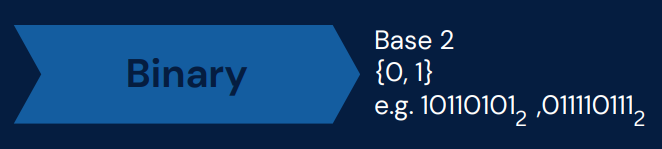
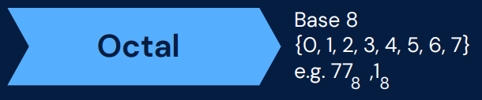
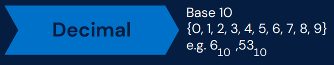

Binary Number System
A Binary number system has only two digits that are 0 and 1. Every number (value) represents with 0 and 1 in this number system. The base of binary number system is 2, because it has only two digits. The Binary Number System is used in:
- Storage of Data
- Arithmetic and Logic Operations
- Memory Addressing
- Communication Protocols
- Machine instructions
Octal Number System
Octal number system has only eight (8) digits from 0 to 7. Every number (value) represents with 0,1,2,3,4,5,6, and 7 in this number system. The base of octal number system is 8, because it has only 8 digits
- File Permissions
- Assembly Language
- Debugging
Decimal Number System
Decimal number system has only ten (10) digits from 0 to 9. Every number (value) represents with 0, 1, 2, 3, 4, 5, 6, 7, 8, and 9 in this number system. The base of decimal number system is 10, because it has only 10 digits. The decimal number system is used in:
- User input and output
- Representing floating-point numbers
- Programming
Hexadecimal Number System
A Hexadecimal number system has sixteen (16) alphanumeric values from 0 to 9 and A to F. Every number (value) represents with 0, 1, 2, 3, 4, 5, 6, 7, 8, 9, A, B, C, D, E, and F in this number system. The base of hexadecimal number system is 16, because it has 16 alphanumeric values. Here A is 10, B is 11, C is 12, D is 13, E is 14 and F is 15. The Octal Numbering System is used in:
- Color Codes
- Memory Addresses
- ASCII and Unicode Encoding
- File Formatting
- Network Addresses